01
Planned milestone · September 2024
Solar + Oil & Gas Warehousing
Laser cutting and bending for solar support structures, robotic welding and assemblies, plus warehousing and consignment stocking for oil-and-gas customers.
Facilities
UCI’s 100-acre site in Conroe, Texas, is the starting point for our North American customers. Behind it: 18 Ultra group manufacturing facilities around Pune, with 650+ machine tools and integrated fabrication, finishing and inspection.
Ultra Corpotech Inc. · United States
14737 Firetower Road, Conroe, Texas. A substantial US footprint for customers across the United States and Canada, supported by the Ultra group’s manufacturing network.
Facility profile from the June 2026 corporate presentation. Talk to UCI about the equipment, capacity and supply program for your project.
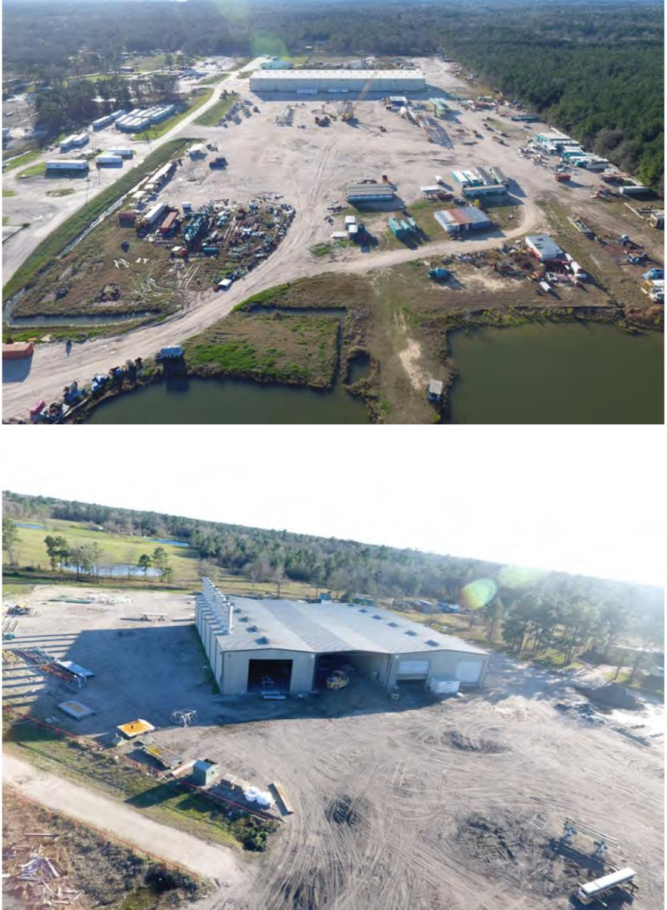
Investment in UCI
A three-phase development plan connects solar structures and oil-and-gas warehousing with fabrication, machining and assembly in the United States.
Planned milestone · September 2024
Laser cutting and bending for solar support structures, robotic welding and assemblies, plus warehousing and consignment stocking for oil-and-gas customers.
Planned milestone · January 2025
Oil-and-gas components, medium and heavy fabrication, machining for frac and completion products, and sub-assemblies.
Planned milestone · January 2026
Expanded machining, fabrication and assemblies, with vendor-managed inventory and consignment stocking to support customer production schedules.
The dates above are targets in the June 2026 development plan. Your UCI team can confirm current capabilities, availability and timing for your program.
Manufacturing resources across the Ultra group. Your UCI team confirms the right site, process and delivery plan for each project.
Metric tons of steel each process can handle in a month.
| Process | Tons a month |
|---|---|
| Laser cutting | |
| Hot-dip galvanizing | |
| Pressing | |
| Robotic welding and fabrication | |
| Press brakes | |
| Powder coating | |
| Roll forming |
Stainless steel pins are passivated in-house, up to 200,000 a day. One metric ton is about 2,205 lb.
Specialist facilities for machining, fabrication, sheet metal, heat treatment and hot-dip galvanizing. The June 2026 footprint lists the following sites and areas.
Heat treatment with pit-type electric furnaces, polymer quenching and tempering.
Medium to heavy components, with CNC turning and milling on DMG MORI, Puma, Mazak and Makino machines.
Very large components machined on Trevisan, Femco, Doosan and HNK machines, with phosphating, shot blasting and magnetic particle inspection.
Heavy-duty fabrication with a robotic cell and machining supported by a 4 m Zeiss CMM.
Precision machining with more than 70 machines, including Mazak and DMG, and fabrication for wind and mining.
Fabricated and roll-formed solar panel mounting structures, plasma and fiber laser cutting, and five-face machining.
Complex oil-and-gas components machined on Trevisan, HNK, DMG and other high-end machines.
Heavy fabrication and machining for railway, metro, wind, construction and mining equipment.
Dedicated hot-dip galvanizing plant.
Small and medium components, with robotic placement for machining.
Two additional facilities identified as under construction in the June 2026 presentation.
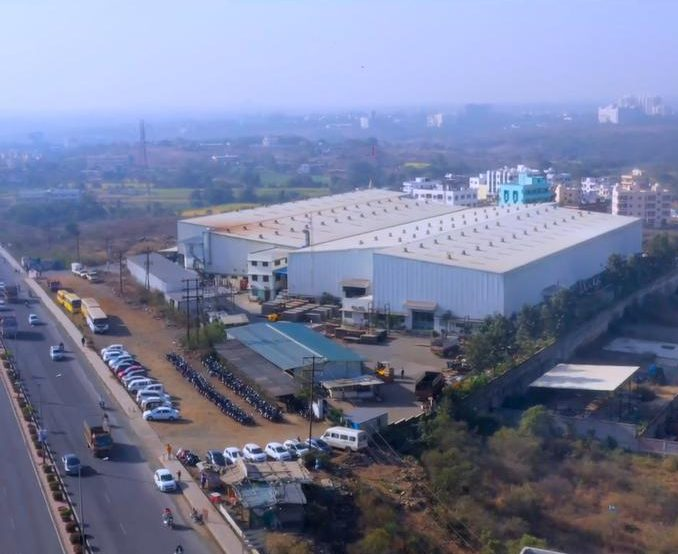
More than 650 machine tools across the group, including CNC turning centers, vertical and horizontal machining centers, vertical turning lathes and four- and five-axis machines. Equipment from DMG MORI, Mazak, Makino, Doosan, Trevisan, Femco, HNK and Breton supports parts from 50 g to over 30 t.
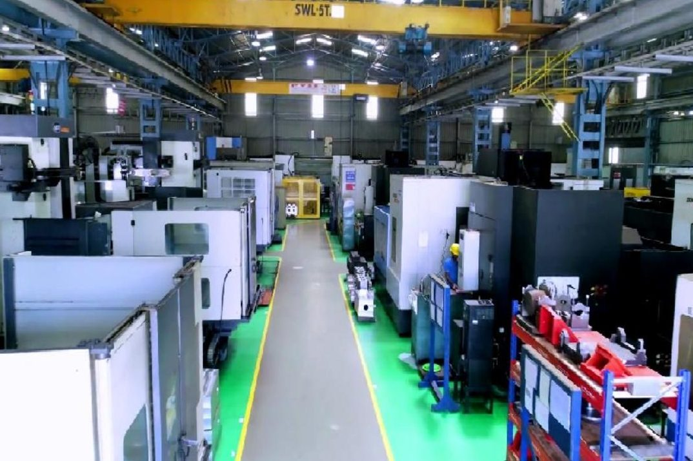
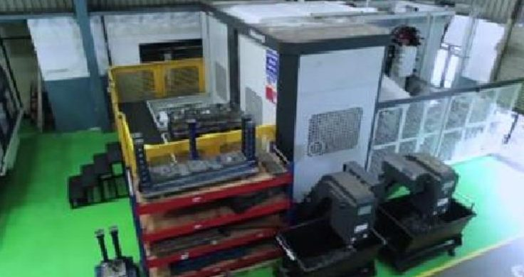
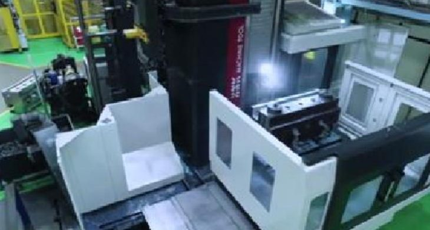
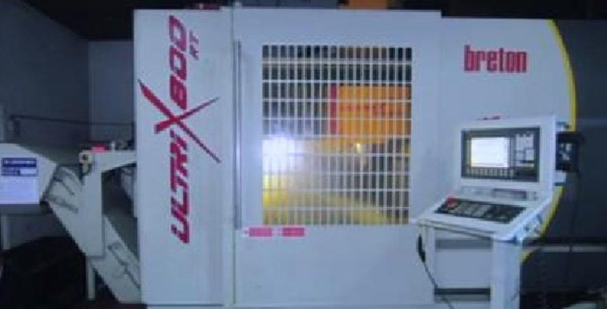
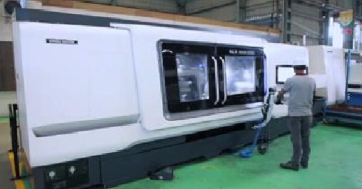
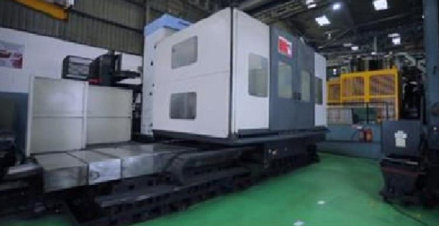
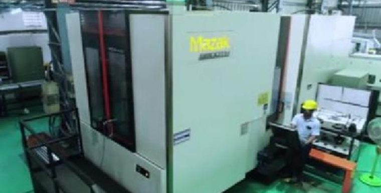
Four CNC turning centers and an in-house nitric passivation plant finish stainless steel pins, up to 200,000 a day.
Dedicated to customers’ products: 12 assembly machines, 16 turning machines and a pin-counting machine.
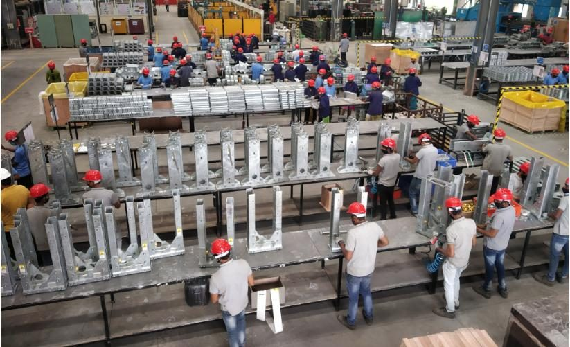
Fiber lasers, presses, press brakes and roll forming lines turn sheet and plate into blanks, brackets and sections.
Four from Bystronic and 16 from SIL Laser, 16 of them added in 2020–21, among more than 25 laser cutting machines in the group.
Including a 320 t mechanical press and 500 t and 300 t hydraulic presses, with eight added in 2020–21.
The group’s largest press, added in July 2022.
From Bystronic and Amada, two of them added in 2020–21.
Each with an uncoiler, roll former, cut-off press and conveyor, making sections for solar mounting structures.
CNC plasma and oxy-acetylene cutting for thick plate, alongside shearing and shot blasting.
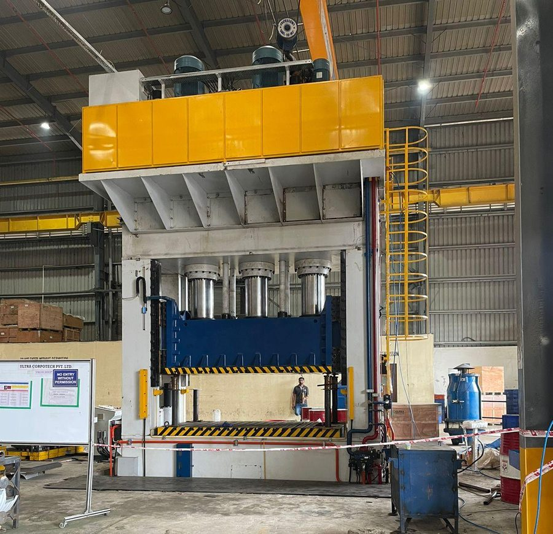
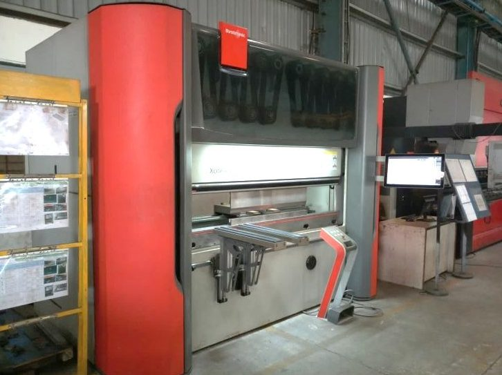
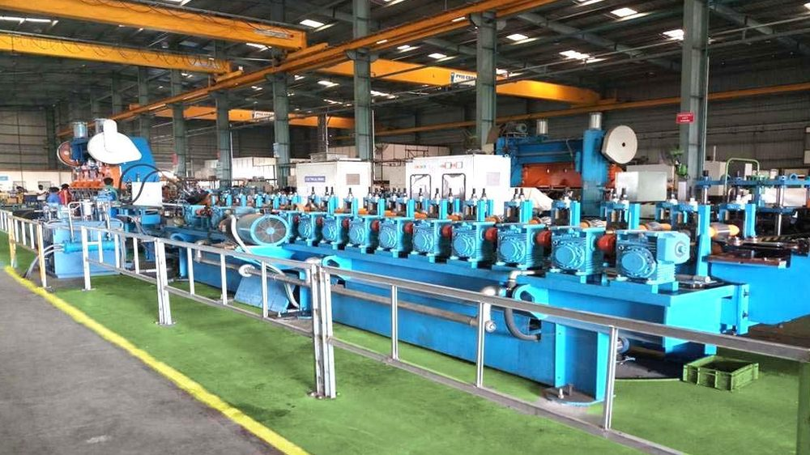
| Metal | Thickness | Laser cutting | Pressing | Press brakes |
|---|---|---|---|---|
| Mild steel and galvanized iron | 0.5 to 25 mm (0.02 to 1 in) | 200 to 250 t | 400 to 600 t | 200 to 250 t |
| Stainless steel | 0.5 to 25 mm (0.02 to 1 in) | 200 to 250 t | 400 to 600 t | 200 to 250 t |
| Aluminum alloy | 1 to 10 mm (0.04 to 0.4 in) | 200 to 250 t | 400 to 600 t | 200 to 250 t |
| Copper | 1 to 10 mm (0.04 to 0.4 in) | 200 to 250 t | 400 to 600 t | 200 to 250 t |
Welding robots and qualified welders build up to 2,000 t of fabrications a month.
Two of them added in 2020–21.
Welded structures up to 50 t, to EN 15085-2 CL1, DIN EN ISO 3834-2 and EN 1090.
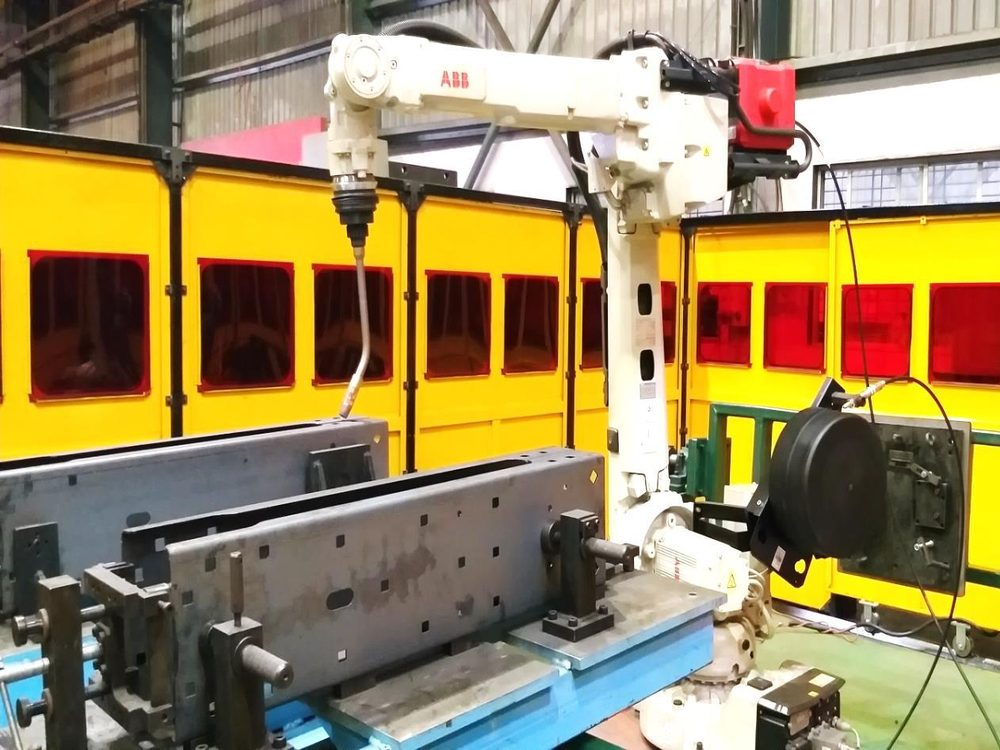
Heat treatment, galvanizing, coating and plating in-house, so parts leave ready to install.
Electric pit-type furnaces taking 5 t a charge, with polymer quenching and tempering, and carburizing in a continuous sealed-quench furnace.
An in-house galvanizing plant, handling 2,500 t a month.
A powder coating line, handling 1,200 t a month.
Quality systems at every stage of inspection, and engineers with dedicated instruments for in-process and final inspection.
A quality management system covering fabricated, machined, heat-treated, surface-treated and formed components, sub-assemblies and pressure-tested assemblies.
Confirm the certificate is currentA license to use the API Monogram on casing and tubing couplings and pup joints.
Confirm the license is current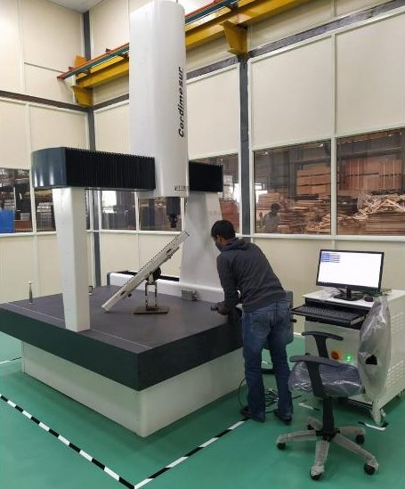
Send us your drawings, and an engineer will match your part to the right plant and machines.